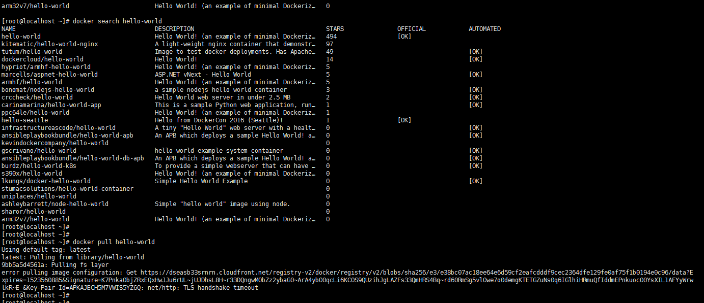
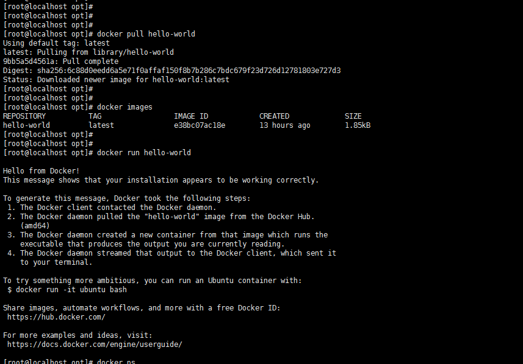
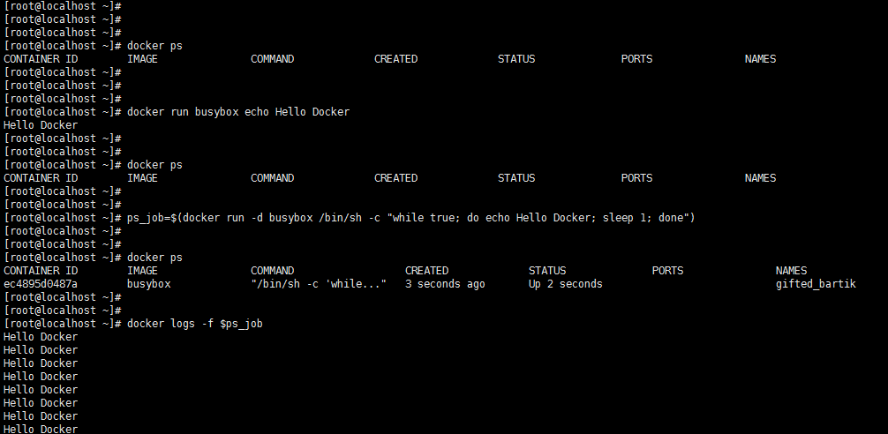
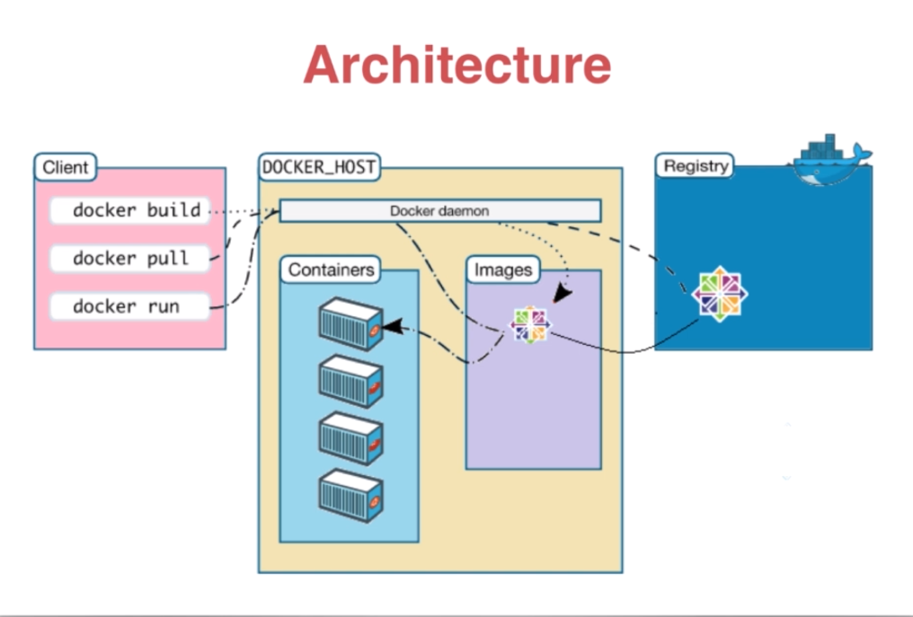
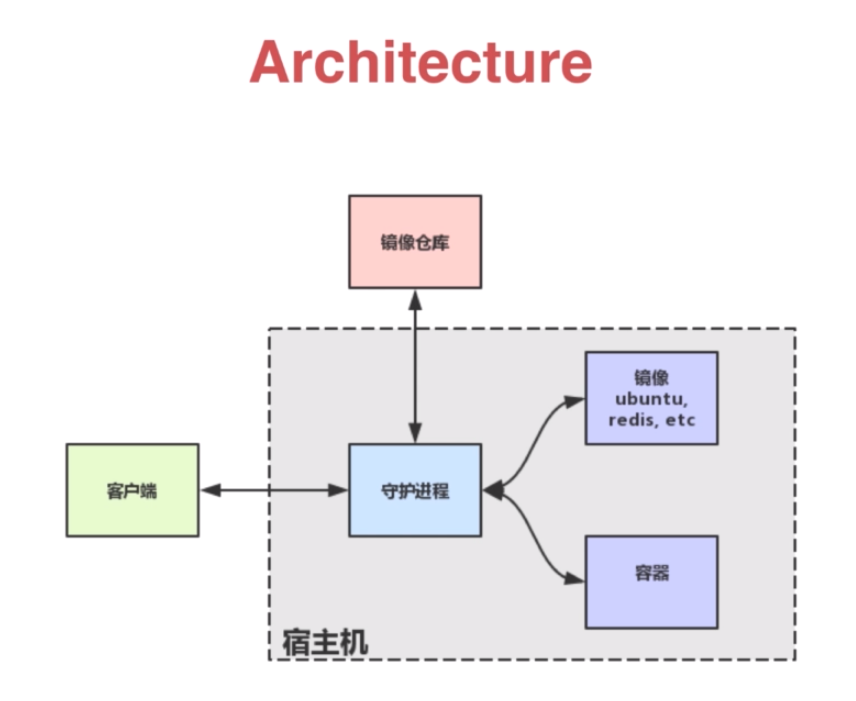

Docker 初体验
前面看了那么多文字，可能还是不知道docker 怎么用。学编程少不了hello world,所以，我们就来试一个helloworld
一、简单命令
| 命令 | 详解 |
|---|---|
| docker search | 搜索images |
| docker pull | 获取images |
| docker run | 运行images |
| docker ps | 查看后台运行的容器 |
| docker build | 构建images |
| docker images | 列出images |
| docker rm | 删除container |
| docker rmi | 删除images |
| docker cp | 在host和container之间拷贝文件 |
| docker commit | 保存改动为新的images |
二、下载并运行一个hello-world
docker 官方给出了一个hello-world 我们运行它就可以了，可以通过搜索命令进行搜索
|


看到上面打印出来的信息，表示我们的hello world 已经成功运行了。
2、我们在试一个例子
busyBox是一个最小的Linux系统，它提供了该系统的主要功能，不包含一些与GNU相关的功能和选项
# 下载 |
因为上面一运行完，容器就退出了，我们试试让busybox 在后台运行
ps_job=$(docker run -d busybox /bin/sh -c "while true; do echo Hello Docker; sleep 1; done") |
$ps_job 这个就是这个容器的ID ，我们可以打印看看
echo $ps_job |
查看后台运行的容器
docker ps |
查看日志
docker logs $ps_job |
停止容器
docker stop $ps_job |
启动容器
docker start $ps_job |
重新启动容器
docker restart $ps_job |
查看所有容器
docker ps -a |
删除指定容器
docker rm $ps_job |
删除所有容器
# -q 这个参数是只显示PID |
查看镜像的历史版本
docker history (image_name) |
将镜像推送到registry
|

三、可能报的错
error pulling image configuration: Get https://dseasb33srnrn.cloudfront.net/registry-v2/docker/registry/v2/blobs/sha256/e3/e38bc07ac18ee64e6d59cf2eafcdddf9cec2364dfe129fe0af75f1b0194e0c96/data?Expires=1523560885&Signature=K7PnkaObjZRxEQxHwJJu6rUL~jUJDhsL8H~r33DQngwMObZz2ybaG0~ArA4ybO0qcLi6KCOS9QUzihJgLAZFs33QmHRS4Bq~rd60RmSg5vlOwe7o0demgKTETGZuNs0q6IGlhiHRmuQfIddmEPnkuocO0YsXIL1AFYyWrwlkR~E_&Key-Pair-Id=APKAJECH5M7VWIS5YZ6Q: net/http: TLS handshake timeout |
这是因为docker默认镜像拉取地址为国外仓库下载速度较慢，则会报错“net/http: TLS handshake timeout”。此时，只需要将拉取地址改为国内镜像仓库即可。
解决方案：修改 /etc/docker/daemon.json 文件并添加上 registry-mirrors 键值
vim /etc/docker/daemon.json |
添加下面的内容，可以加多个镜像
{ |
四、Docker 运行的流程图

